内容提取
从地域景观、器物、纹样和五行意象中筛选可转译的文化元素。
以乌鸦羽翼、骨骼结构与暗色生态为视觉母题，将服装廓形、材质细节、数字角色与场景影像组织为同一套视觉语言。
项目不是单纯完成一件服装，而是先提取乌鸦的尖锐轮廓、羽毛层叠和冷色反光，再把这些特征转化为肩部结构、面料纹理与角色姿态，最终放入三维场景中验证整体气质。
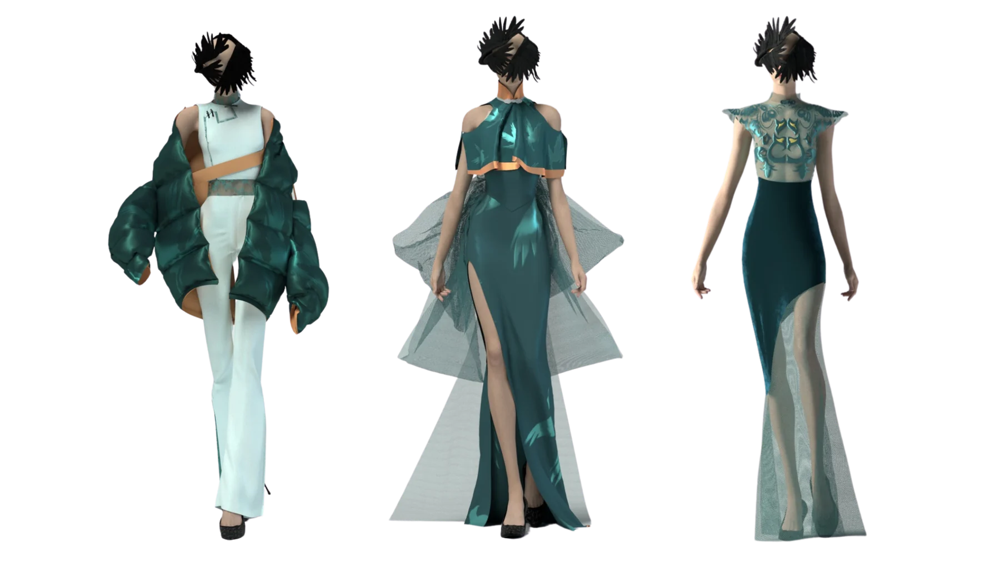
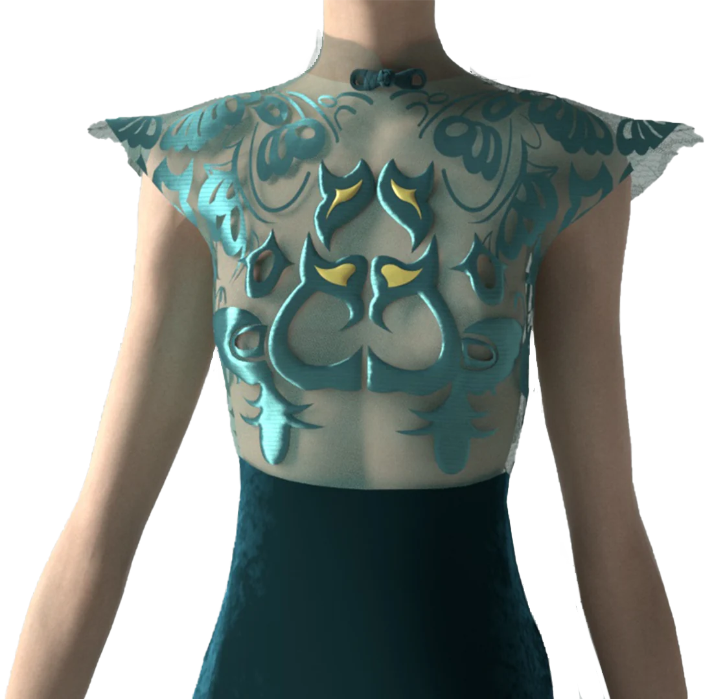
FORM STUDY / DIGITAL GARMENT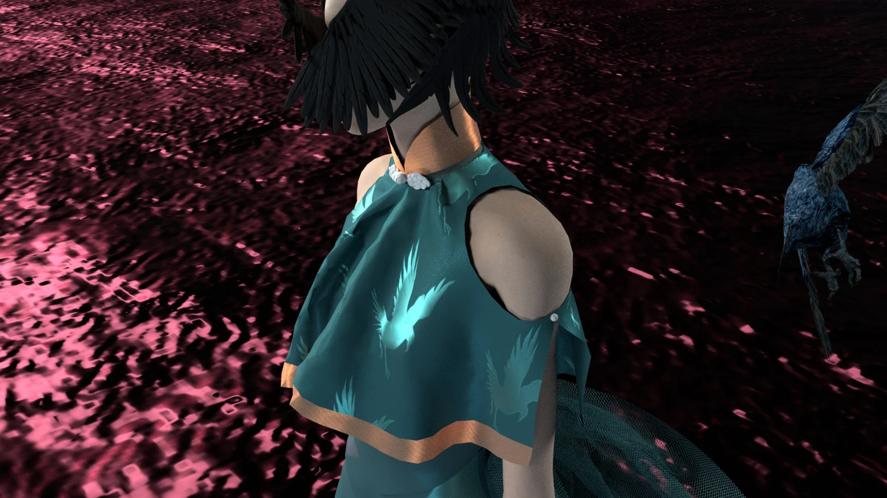
通过光线、环境色与角色比例测试服装在最终场景中的识别度和叙事张力。
围绕开化地域文化建立移动端探索体验，把地方图像、传统纹样、五行线索与任务机制组织成可浏览、可收集、可推进的数字旅程。
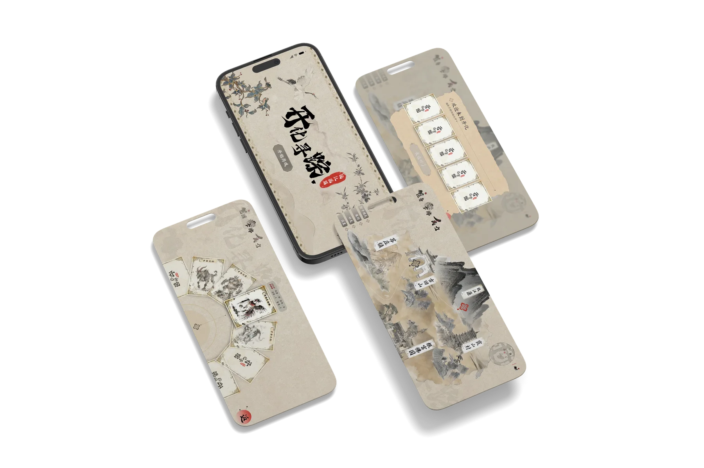
从地域景观、器物、纹样和五行意象中筛选可转译的文化元素。
建立水墨底色、符号图形、卡牌与界面的统一视觉规范。
用地图探索、任务收集和阶段反馈串联用户的游览过程。
参与前期调研、信息结构、界面方案与展示样机整理。
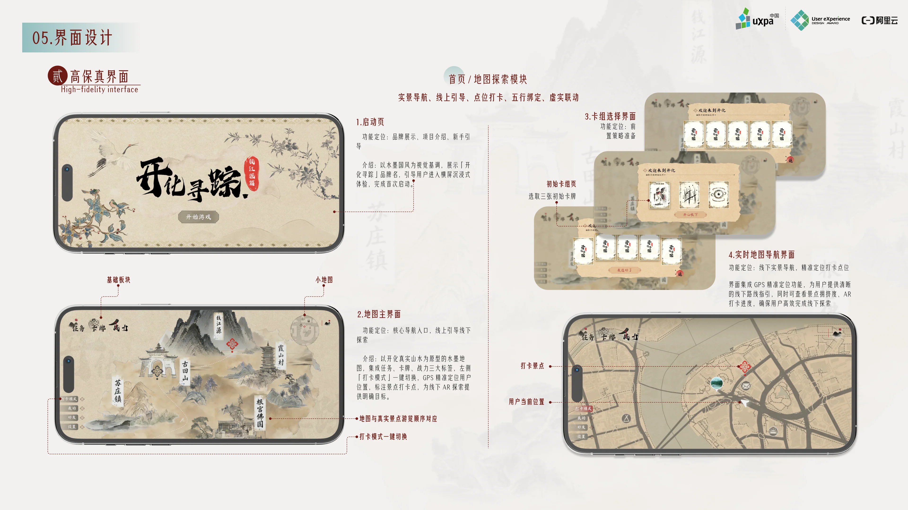
一次从文本命题到动态语言的练习：通过人物剪影、机械视觉、坠落与追逐等段落，讨论“人”与“仿生人”之间模糊的判断边界。
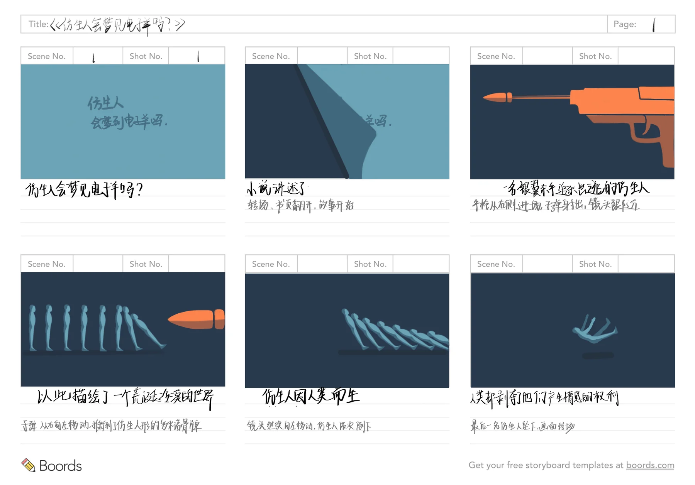
将冲突、追逐、坠落与凝视拆成可阅读的镜头，再以蓝灰色空间建立疏离感，橙红色承担危险和生命的视觉信号。这里重点展示分镜逻辑与图形语言，而不是把尚在练习中的动效作为最终成果。
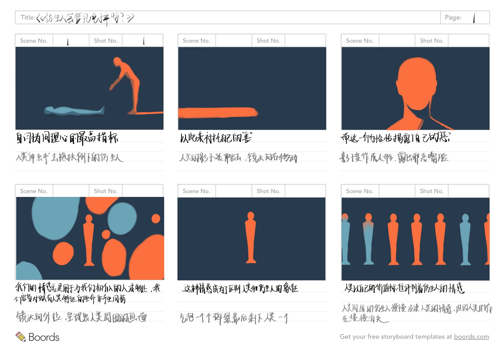
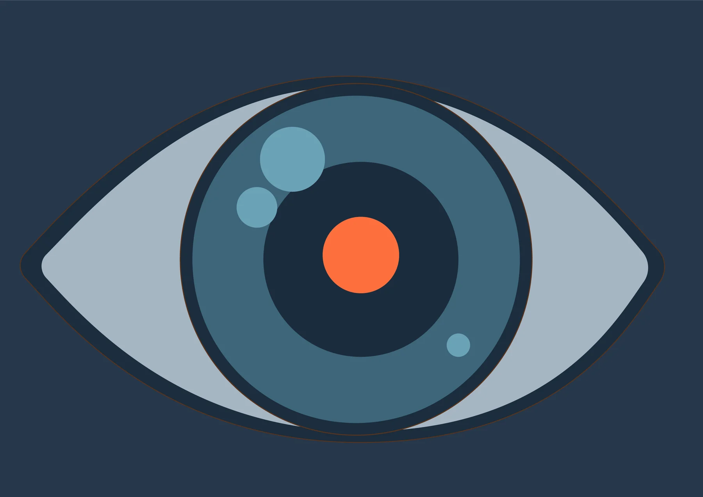
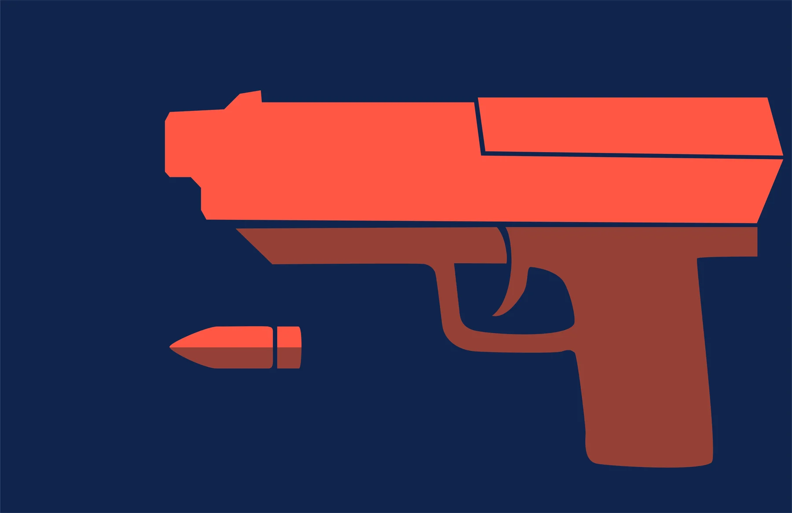
以散步式观察记录城市里的距离、遮挡与偶然关系。摄影训练帮助我在界面之外持续关注真实环境中的人、空间与情绪。
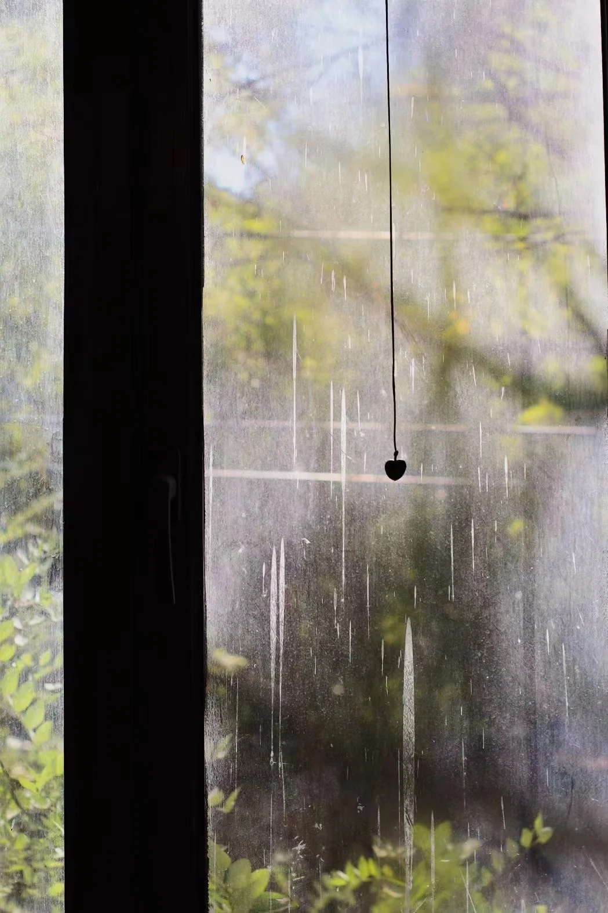
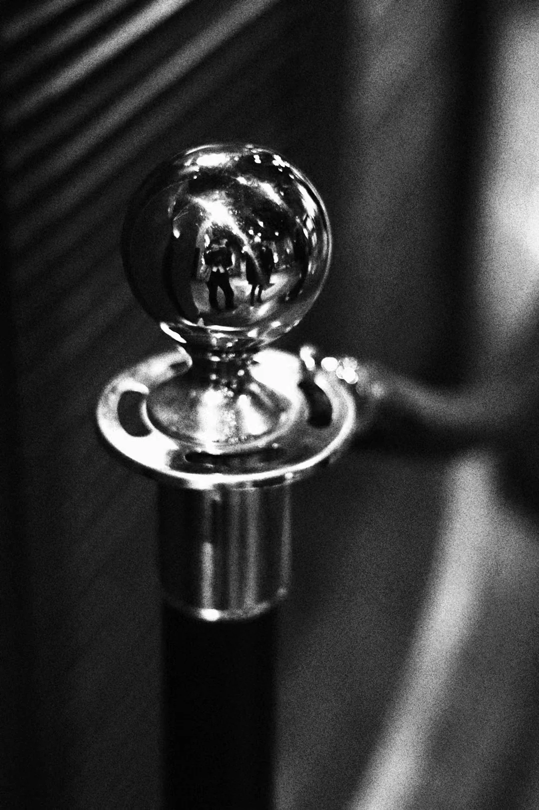
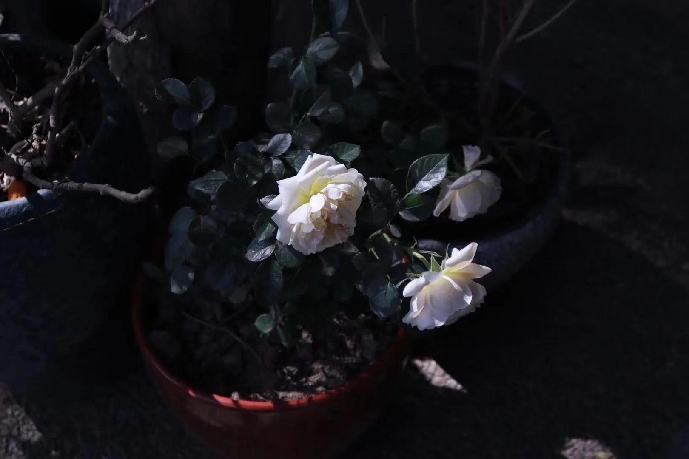